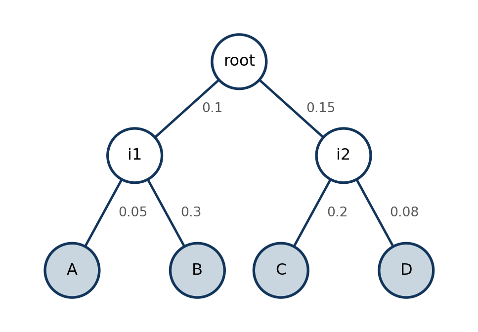
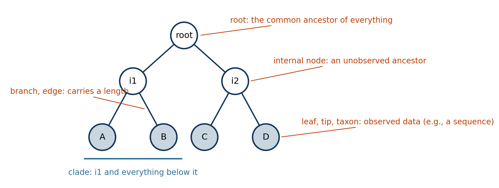
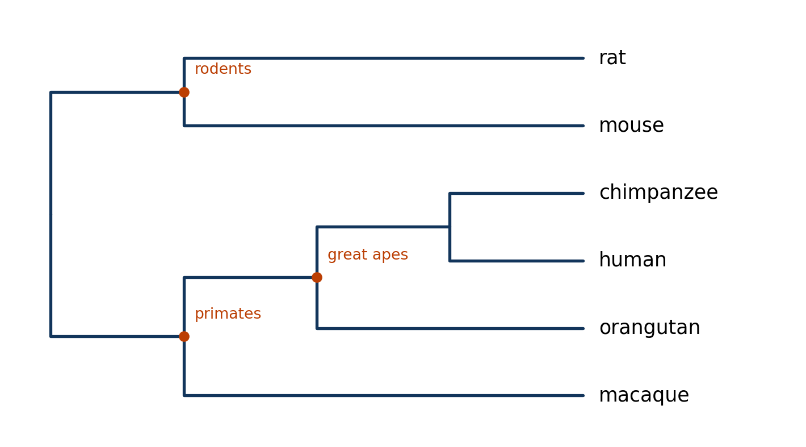
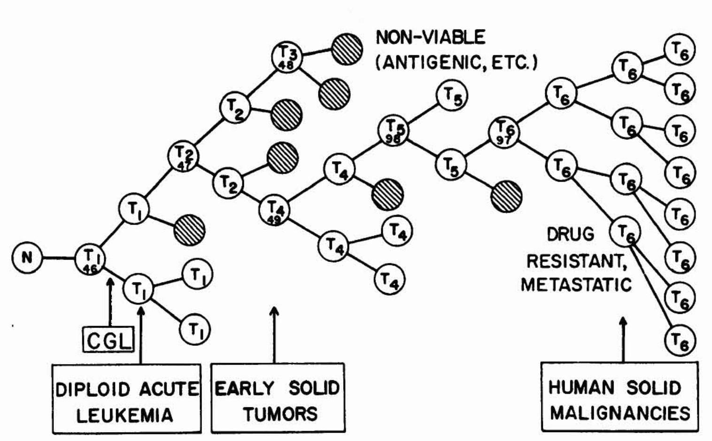
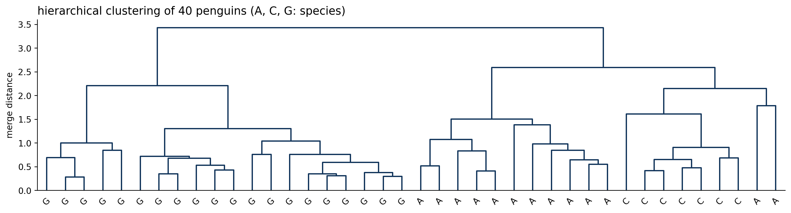
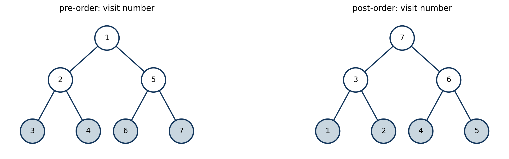
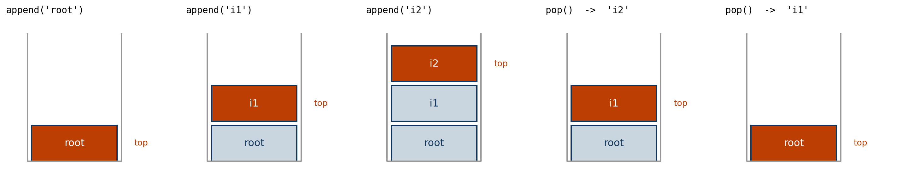

Probabilistic Machine Learning
Trees as data structures: a Node class, traversals, and sequences on a tree
Seong-Hwan Jun
Department of Biostatistics and Computational Biology, University of Rochester Medical Center
Goals
- Build a tree data structure out of
Nodeobjects that know their parent and their children. - Write pre-order and post-order traversals.
- Compute simple tree properties by traversal instead of by hand.
- Simulate a DNA alignment from the tree.
The tree we will build
A phylogeny on four taxa, A to D. Round nodes are the unobserved ancestors. The number on each branch is its length, which the substitution model will turn into a probability of change.
The anatomy of a tree

- Root, internal nodes, leaves. Observations live at the leaves; the internal nodes are ancestors, and the root is the ancestor of all. The direction away from the root is down, toward the leaves.
- Parent and children are the two ends of a branch. Nodes with the same parent are siblings. Walking up from a node collects its ancestors; everything below it is its descendants.
- A clade is a node together with all of its descendants. The most recent common ancestor of two leaves is the first node on both of their paths to the root.
- A branch length measures how much happened along the branch: time, expected substitutions, or an estimated distance, depending on the model.
Evolutionary trees

- Species. The leaves are living species, the internal nodes extinct common ancestors, and the question is who is most closely related to whom.
- Viruses. The leaves are sequenced genomes; the tree is the history of an outbreak. Nextstrain grows the SARS-CoV-2 tree in near real time, with branch lengths in calendar time, and a clade on it is a variant.
- Immune cells. B cell receptor lineages are a phylogeny of somatic hypermutation inside one person.
Cancer evolution


A tumour is a population of cells descending from one normal cell by acquiring mutations. The leaves are the cell populations we sequence, the internal nodes are the clones that gave rise to them, and the shape of the tree, linear, branched, or neutral, is a claim about how the cancer grew and what it will do under treatment.
Trees without a model behind them

- Hierarchical clustering also produces a tree. The leaves are data points, each internal node is a merge, and its height is the distance at which the merge happened. Cut the tree at some height and the clades are your clusters.
- Same anatomy, same traversals, different meaning: nothing is an ancestor and nothing evolved. There is no generative model and no likelihood, which is exactly the difference between a clustering and the phylogenies above.
- Today’s data structure serves both. The lecture after it needs the second kind: a tree with a probability model on its branches.
The Node class
The class, methods left out
- This is the whole data structure, and it is the anatomy slide made into data. Four attributes per node, and the last two are what make it a tree data structure: a node owns links to its children and its parent, so clades, ancestors and descendants can all be reached.
- Every other quantity, the leaves, the total branch length, a sequence, and next lecture’s messages, is either computed from these four or attached to the node as a fifth.
- The methods, the functions that act on a node, come after we have read this piece of syntax line by line.
A new type
class Node:defines a new type, the waylistanddictare types. Everything indented under it belongs to the type.- A value of that type is an object, or an instance: one node of one tree. The class says what every node carries and what every node can do.
- Two kinds of thing go inside: attributes, the data each object holds, and methods, the functions that act on an object.
The constructor
__init__runs each time a newNodeobject is created. It is a function like any other, except for its first argument.selfis the object being built. Python supplies it; you never pass it yourself. Every method of a class takesselffirst.- An attribute is created by assigning to
self.<name>. There is no declaration step: the four lines above are the declaration. Every node gets a name, a branch length, an empty list of children, and no parent yet. branch_length=0.0is a default, so the root can be created without one.
Creating an object
root = Node("root")
i1 = Node("i1", 0.10)
print(root.name, root.branch_length, root.children, root.parent)
print(i1.name, i1.branch_length)
rootroot 0.0 [] None
i1 0.1<__main__.Node at 0x11040b3d0>- Calling the type,
Node("root"), creates a fresh object and runs__init__on it withselfset to that object andname="root". The result is whatrootnow holds. - Attributes are read with a dot:
i1.branch_length. Each object has its own copy; changingi1.nameleavesroot.namealone. - The last line shows what Python prints for an object by default: its type and its address in memory. Useless for reading a tree. We fix that a few slides on.
Attributes can be set from outside
root.children.append(i1)
i1.parent = root
print(root.children[0].name, i1.parent.name)
print(i1.parent is root)i1 root
True- A variable holds a reference to the object, not a copy.
root.children[0]andi1are the same node:ischecks that. - So a tree is nothing more than objects pointing at each other: each child’s
parentpoints up, each parent’schildrenlist points down. - Setting both pointers by hand every time is error prone. We will implement the
add_childmethod to handle the bookkeeping.
A method
class Node:
def __init__(self, name, branch_length=0.0):
self.name = name
self.branch_length = branch_length
self.children = []
self.parent = None
def is_leaf(self):
return len(self.children) == 0
root = Node("root")
print(root.is_leaf())True- A method is a function defined inside the class.
root.is_leaf()is shorthand forNode.is_leaf(root): the object before the dot becomesself, and the parentheses are empty because there is nothing else to pass. - Inside the method,
self.childrenisroot.children. The method reads the object’s own attributes without being told which object;selfalready says. - A method that changes the object, like
add_child, does so by assigning toself.<attribute>or to the attributes of what it was handed.
Task 1: is_root
Add a second method to the class on the previous slide, and make the assertions pass.
- Mind the indentation: the
defline sits inside the class body, at the same depth asis_leaf, or Python will define a plain function that no node can call. assertraises an error when its condition is false and does nothing otherwise. A cell full of passing assertions is how every task today reports success.
__repr__
class Node:
def __init__(self, name, branch_length=0.0):
self.name = name
self.branch_length = branch_length
self.children = []
self.parent = None
def is_leaf(self):
return len(self.children) == 0
def is_root(self):
return self.parent is None
def __repr__(self):
return f"Node({self.name}, {len(self.children)} children)"
root = Node("root")
root.children.append(Node("i1", 0.10))
rootNode(root, 1 children)- Names with double underscores are hooks: methods Python calls on your behalf at set moments.
__init__runs on creation;__repr__runs whenever Python needs to display the object: at the end of a cell, when the object sits in a list that is printed, or insideprintwhen the class has no__str__. - It must return a string. What the string says is up to you, and the point is to make debugging bearable: a list of children now reads as names and sizes, not addresses.
Task 2: assemble the class
Everything above, plus one more method of your own.
class Node:
def __init__(self, name, branch_length=0.0):
self.name = name
self.branch_length = branch_length # length of the branch to the PARENT
self.children = []
self.parent = None
def add_child(self, child):
"""Attach `child` below this node, set its parent, and return the child."""
# TODO: two pointers to set, one object to return
raise NotImplementedError
def is_leaf(self):
return len(self.children) == 0
def is_root(self):
raise NotImplementedError
def __repr__(self):
return f"Node({self.name}, {len(self.children)} children)"Returning the child from add_child is a small convenience that pays off immediately: i1 = root.add_child(Node("i1", 0.10)) builds, attaches and names the node in one line.
Task 3: build the tree by hand
root = Node("root")
i1 = root.add_child(Node("i1", 0.10))
i2 = root.add_child(Node("i2", 0.15))
# TODO: attach A (0.05) and B (0.30) under i1, C (0.20) and D (0.08) under i2,
# keeping the four leaves as variables A, B, C, D
assert len(root.children) == 2
assert i1.parent is root
assert root.is_root() and not root.is_leaf()
assert all(c.parent is i2 for c in i2.children)Then print what you built. This helper is yours to keep:
root (0.0)
i1 (0.1)
A (0.05)
B (0.3)
i2 (0.15)
C (0.2)
D (0.08)Look at show for a moment. It prints the node, then calls itself on each child. That is already a traversal, and the next task gives it a name.
Traversals
Two orders that matter
A traversal visits every node once. The two we need differ only in when a node is visited relative to its children.
- Pre-order: visit the node, then its children. The root comes first. Information flows down: a child is visited only after its parent has been.
- Post-order: visit the children, then the node. The root comes last. Information flows up: a node is visited only after everything below it has been.

A stack
A stack is a list that is only touched at one end. append pushes an item on top; pop removes the item on top and returns it. The last item pushed is the first one back out.
stack = []
stack.append("root")
stack.append("i1")
stack.append("i2")
print(stack)
top = stack.pop()
print(top, stack)
print(stack.pop(), stack)['root', 'i1', 'i2']
i2 ['root', 'i1']
i1 ['root']
Task 4: write them with a stack
No recursion here. Keep a list of nodes still to be visited, and loop until it is empty.
def preorder(node):
"""Return a list of nodes, each parent before its children."""
order = []
stack = [node] # nodes waiting to be visited; the last one goes next
while stack:
v = stack.pop()
# TODO: record v in order, then push its children so that the
# FIRST child is the next one popped
raise NotImplementedError
return order
def postorder(node):
"""Return a list of nodes, each node after all of its children."""
# TODO: hint -- run the same loop but push the children in their natural order,
# so the LAST child is popped first; the reverse of that list is a post-order.
raise NotImplementedError
print([v.name for v in preorder(root)])
print([v.name for v in postorder(root)])['root', 'i1', 'A', 'B', 'i2', 'C', 'D']
['A', 'B', 'i1', 'C', 'D', 'i2', 'root']How the loop works
- A traversal keeps a stack of nodes waiting to be visited. Pop one, record it, push its children. The children now sit on top, so they are visited before anything that was waiting below them: the loop goes deep before it goes wide.
while stack:runs until the list is empty, since an empty list counts as false.- A recursive function uses a stack too, the one Python keeps of the calls in progress. Writing it yourself just moves it into a list, with no limit on how deep it can go.
Note
The recursive versions are three lines each, and show from Task 3 is already a recursive pre-order. The reason to learn the stack form is Python’s recursion limit of 1000 frames: a caterpillar shaped tree with a few thousand leaves will hit it, and large sequencing studies produce trees that size.
Run them on your tree
print("pre-order :", [v.name for v in preorder(root)])
print("post-order:", [v.name for v in postorder(root)])pre-order : ['root', 'i1', 'A', 'B', 'i2', 'C', 'D']
post-order: ['A', 'B', 'i1', 'C', 'D', 'i2', 'root']Then check the two properties that matter, rather than eyeballing the lists:
pre, post = preorder(root), postorder(root)
assert pre[0] is root and post[-1] is root # root first in pre-order, last in post-order
for v in post:
for c in v.children:
assert post.index(c) < post.index(v) # every child comes before its parent
for v in pre:
for c in v.children:
assert pre.index(c) > pre.index(v) # every child comes after its parent
print("both orders check out")both orders check outMatch the names against the visit numbers on the figure. In post-order, root is last and i1 only appears once A and B have; in pre-order it is the other way around. Those two properties, not the exact left-to-right order, are what the algorithms will rely on.
Task 5: properties by traversal
Write each of these with a traversal, not by reading the picture.
def leaves(node): # list of leaf nodes, in pre-order
...
def total_length(node): # sum of every branch length in the subtree
...
def path_to_root(node): # [node, node.parent, ..., root]
...
assert [v.name for v in leaves(root)] == ["A", "B", "C", "D"]
assert abs(total_length(root) - 0.88) < 1e-12
assert [v.name for v in path_to_root(A)] == ["A", "i1", "root"]leaves and total_length are each a loop over preorder with one condition or one running sum. path_to_root is the one function here that walks up, and it is the reason parent is stored.
Sequences on a tree
The generative story
A phylogeny is a latent variable model. The evolutionary model is a substitution matrix \(P(t)\): the probabilities of each nucleotide turning into each other along a branch of length \(t\). Sequences of length \(S\) are generated one site at a time. For each site \(s = 1, \ldots, S\):
- Draw the nucleotide at the root, \(x_{\text{root}, s} \sim \pi\), here uniform on \(\{A, C, G, T\}\).
- Walk down the tree. On the branch into \(v\), of length \(t_v\), draw the nucleotide at \(v\) from the row of \(P(t_v)\) selected by the nucleotide at its parent: \[ p(x_{v, s} = b \mid x_{\text{pa}(v), s} = a) = P_{ab}(t_v). \]
- Sites are independent: nothing at site \(s\) looks at site \(s - 1\). Each column of the alignment is a fresh run of the same two steps on the same tree.
- We observe only the sequences at the leaves. The ancestors are what we will later try to infer.
- Step 2 is a pre-order traversal. A node’s state is drawn from a row of a matrix chosen by its parent’s state, so the parent has to go first.
The substitution matrix
Under the Jukes-Cantor model, every substitution is equally likely and the matrix has a closed form:
\[ P_{aa}(t) = \tfrac14 + \tfrac34 e^{-4t/3}, \qquad P_{ab}(t) = \tfrac14 - \tfrac14 e^{-4t/3} \;\; (a \neq b). \]
def jc69(t):
e = np.exp(-4 * t / 3)
P = np.full((4, 4), 0.25 - 0.25 * e)
np.fill_diagonal(P, 0.25 + 0.75 * e)
return P
print(np.round(jc69(0.05), 3))
print(np.round(jc69(2.0), 3))[[0.952 0.016 0.016 0.016]
[0.016 0.952 0.016 0.016]
[0.016 0.016 0.952 0.016]
[0.016 0.016 0.016 0.952]]
[[0.302 0.233 0.233 0.233]
[0.233 0.302 0.233 0.233]
[0.233 0.233 0.302 0.233]
[0.233 0.233 0.233 0.302]]Rows are distributions over the child’s nucleotide. A short branch barely changes anything; a long branch forgets the parent and every row tends to \((\tfrac14, \tfrac14, \tfrac14, \tfrac14)\). Branch length is measured in expected substitutions per site, not in years.
Task 6: evolve sequences down the tree
Store the sequence on the node itself, for every node, so that the truth at the ancestors is kept for grading later.
def simulate_sites(root, n_sites, rng):
"""Attach `seq`, an integer array of length n_sites with A,C,G,T = 0,1,2,3,
to every node in the tree."""
for v in preorder(root):
if v.parent is None:
v.seq = rng.choice(4, size=n_sites) # root: uniform
else:
P = jc69(v.branch_length)
# TODO: for each site, draw v's nucleotide from the row of P
# selected by the parent's nucleotide at that site
raise NotImplementedError
return root
def to_string(seq):
return "".join("ACGT"[b] for b in seq)
rng = np.random.default_rng(5)
simulate_sites(root, n_sites=300, rng=rng)
for v in preorder(root):
print(f"{v.name:>5} {to_string(v.seq[:40])}") root GTATCGGCTACCGCAAAAATAGTACCCTATTTACGCGGGA
i1 GTATCCCCTAACGCAAAAATAGTTCGCTACATACGCGGGA
A GTATCTCCTAACGCAAAAATAGTGCGCTACATACGCGGGA
B GTAACCACTACTGCCTTAACGATTCGCTACATACGCGGCA
i2 GTATCGGCTACCGCATAAATACTACCCGATTTAGCAGGGA
C GCAACGGTTACCGGATAAAAACTACCCGGTTTAGCAGGGG
D GTATCGGCTACCGCATAAATACTTCCCAATTGAGCACGTARead the alignment
AandBshare a parent,i1, and short branches lead toA. Columns whereAdiffers fromi1are rare; columns whereBdiffers are less rare, because its branch is six times longer.CandDresemblei2, which in turn resemblesroot. Every column is a tiny piece of evidence about who is close to whom.- The data a phylogenetics program sees are the leaf rows only. The three ancestral rows are latent, and everything next lecture is about summing them out.
Summary
What you have built
- A
Nodeclass withparent,children, and a branch length, and a seven node tree built from it. preorderandpostorder, written with a stack so they work on trees of any size.- Tree properties computed by traversal: the leaves, the total branch length, the path from a node to the root.
- A simulator for the generative model: uniform at the root, one \(P(t)\) draw per branch, pre-order.
Keep this code. Next lecture adds one attribute per node, a vector over \(\{A, C, G, T\}\), and one rule per traversal, and the likelihood of your alignment falls out of it.
What to submit
A Quarto document lab4.qmd with your solutions to tasks 1 to 6 with their assertions passing and the alignment printed. Due at the start of next Wednesday’s class. Discuss freely; write your own code.
Your simulator draws every site independently and walks the tree once per site. Next lecture computes the likelihood of the leaf rows by summing over the joint ancestral states. Why does that sum factorize over sites, and what about the model would have to change for it not to?
Appendix
Task 4: a solution
def preorder(node):
order, stack = [], [node]
while stack:
v = stack.pop()
order.append(v)
stack.extend(reversed(v.children)) # push the LAST child first, so the FIRST child pops next
return order
def postorder(node):
order, stack = [], [node]
while stack:
v = stack.pop()
order.append(v)
stack.extend(v.children) # last child pops next: root, then subtrees right to left
return order[::-1] # the reverse of that is: subtrees left to right, then root- A stack hands back the most recently pushed item, so the order of pushing is the only thing to get right.
- For post-order, visiting the root and then the subtrees right to left is the exact reverse of visiting the subtrees left to right and then the root, so one reversal finishes the job.
order[::-1]is slice notation,list[start:stop:step], with the start and stop left empty and a step of \(-1\): walk the whole list backwards. It returns a new, reversed list and leavesorderas it was.list(reversed(order))does the same thing in words.